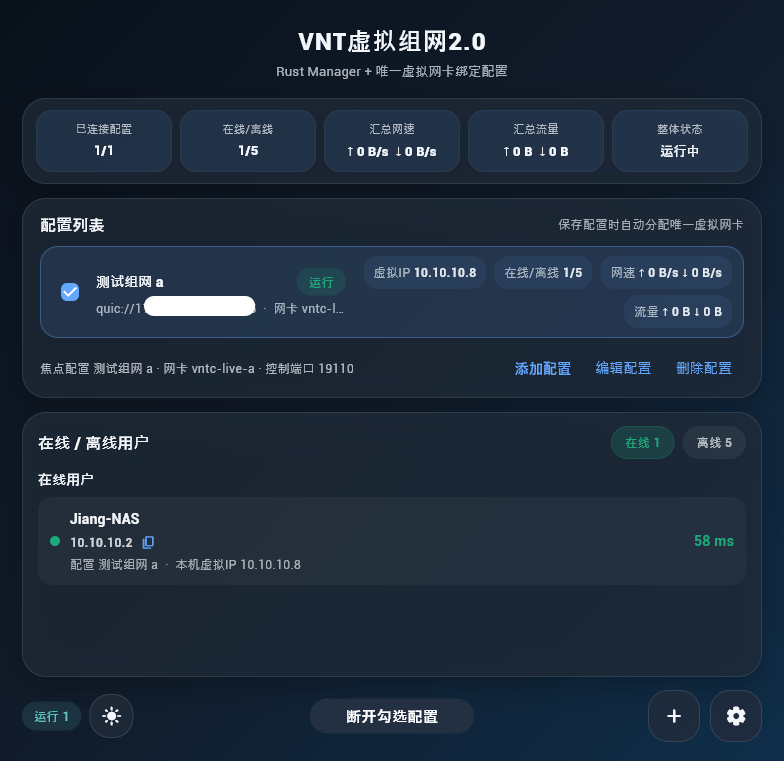
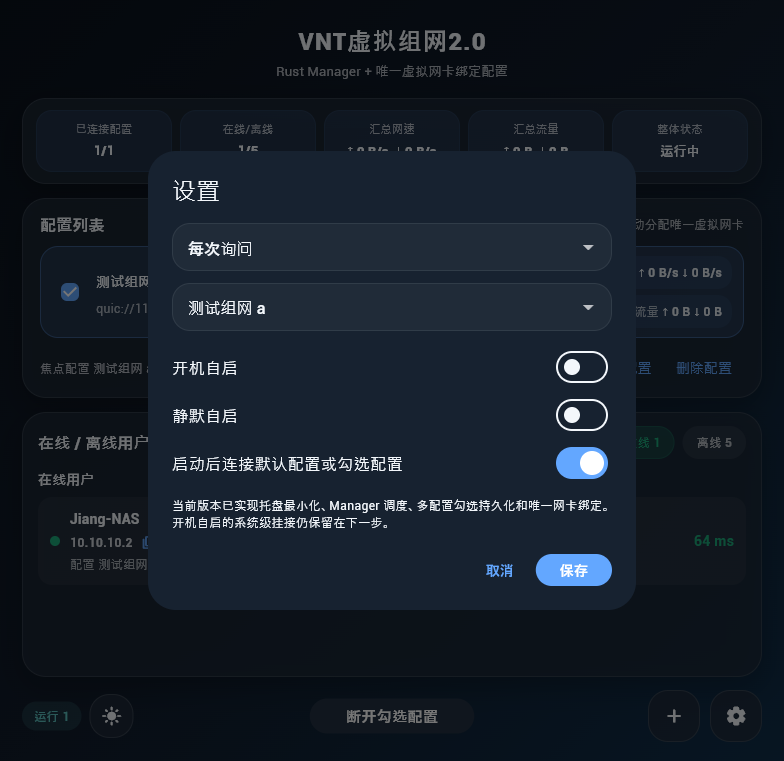
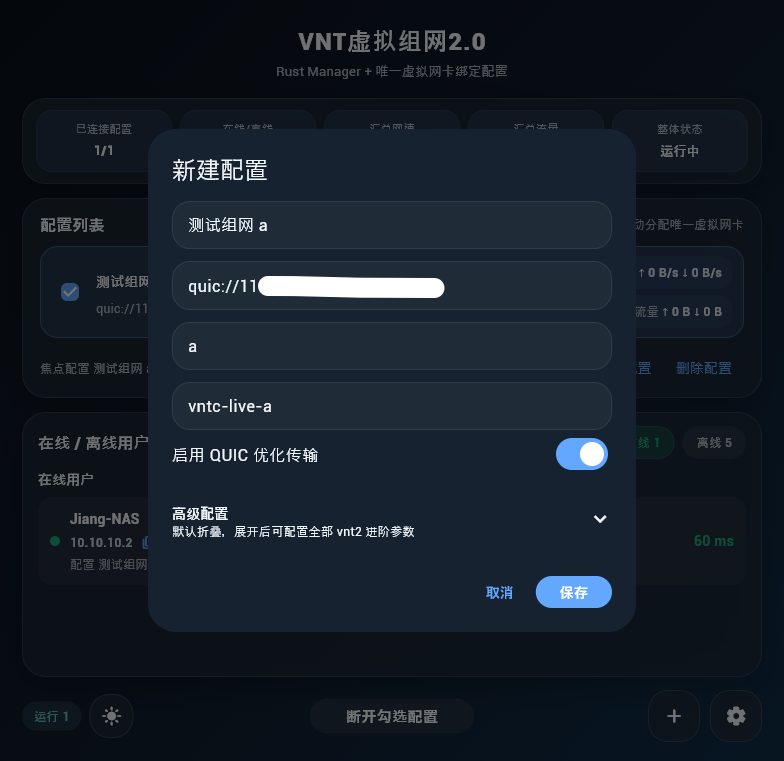
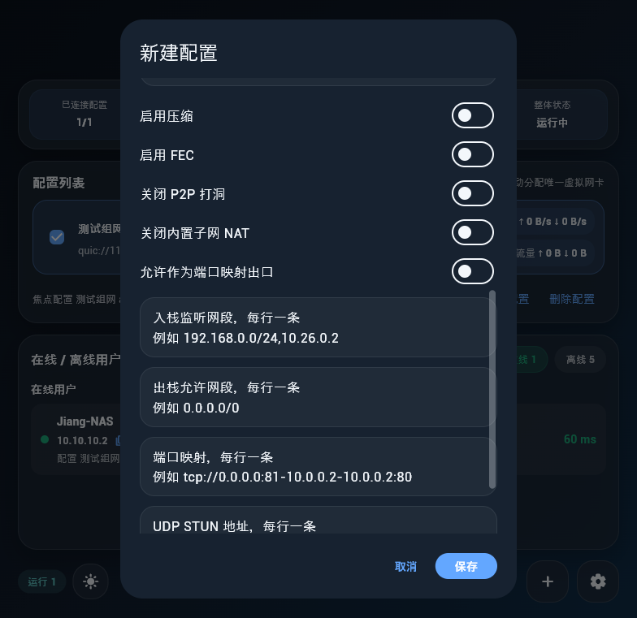

Windows · Flutter · Rust Manager · VNT 2.0
0
核心体验模块
0
一键下载包类型
0
默认桌面窗口宽高
VNTc让虚拟组网 一键达成
VNTC 2.0 以多配置统一调度为核心，把连接、监控、切换、托盘常驻和系统语言自适应整合进一个现代化 Windows 客户端。
多配置批量连接 / 断开
唯一虚拟网卡自动分配
中文 / English 自适应

Product Highlights
磨砂玻璃感 + 模块化布局，把复杂网络状态压缩进一个清晰界面
页面延续客户端的暗色霓虹气质，用发光层、玻璃卡片和分区信息架构展示真实能力，而不是普通下载落地页。
多配置统一调度
在一个客户端中管理多个 VNT 配置，支持勾选后批量连接、批量断开，避免多开实例的混乱。
唯一资源自动绑定
保存配置时自动分配唯一 `tun_name`、`ctrl_port` 与 `device_id`，减少冲突和重复维护。
托盘与静默启动
支持最小化到托盘、关闭询问、开机自启和静默启动，让桌面端长期驻留更自然。
系统语言自动识别
中文系统默认进入中文界面，非中文系统自动进入英文界面，也支持设置页手动切换。
Interface Showcase
真实界面截图，不靠概念图
直接使用当前项目目录 `软件截图` 中的真实界面作为展示素材，集中呈现首页总览、设置弹窗和高级配置体验。
从总览到细节，一层层展开
首页负责全局状态聚合，设置弹窗承载系统行为切换，高级配置面板则面向真实组网参数编辑，三者组合后才构成完整的桌面使用体验。
- 顶部大图区直接建立产品识别度
- 截图卡片使用悬浮光效与轻微倾斜响应
- 滚动进入视区时分批显现，增强浏览节奏



Architecture
前端视觉与底层调度分层明确
Flutter Windows
提供桌面 UI、交互动效、托盘行为和设置页体验。
Rust Manager
统一调度多个配置实例，聚合状态、流量和连接数据。
vnt2_cli
承接 VNT 2.0 运行能力，负责底层组网连接和控制。
Download Center
累计下载
--
GitHub Release 实时聚合
安装版下载
--
.exe 包
便携包下载
--
.zip 包
直接下载可运行版本
当前页面按钮已直连 GitHub Release `v1.0.0` 的安装版与便携包。点击后即可开始下载，无需额外跳转查找。